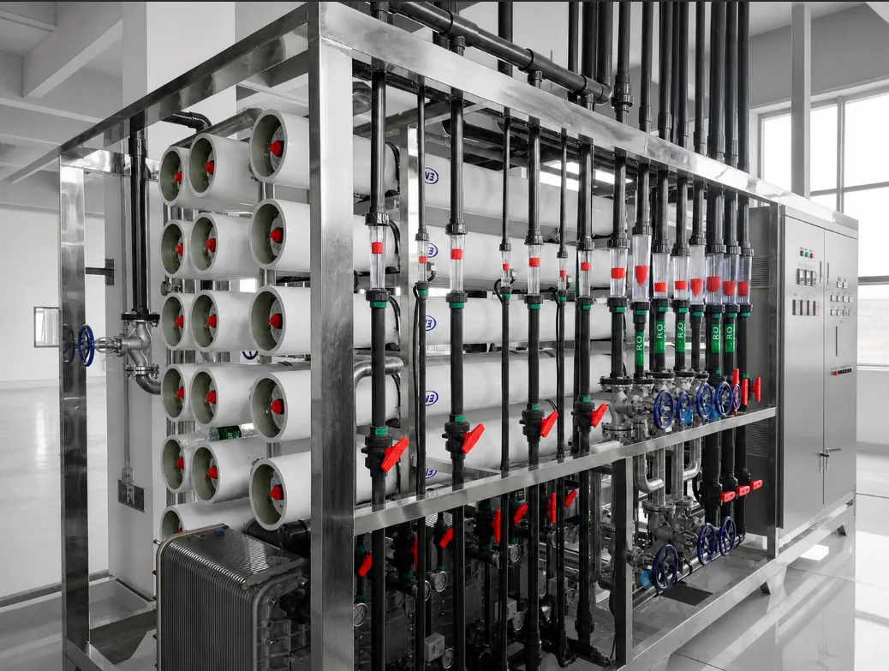

01
What it is
An ultrapure system combines RO pretreatment with EDI or a polishing mixed bed, UV and terminal filtration to remove ions, organics, particles and microorganisms.
Electronic-Grade, EDI, Pharmaceutical & Deionized Water
1-year whole-machine warranty; membranes, UV lamps, cartridges and other consumables excluded. First-tier brand membranes and components (e.g., Dow, Hydranautics) and control configuration are selected for your feed-water scenario and quality targets.
KONCHE provides a coordinated range of industrial ultrapure water, EDI, pharmaceutical purified-water and deionized-water systems. Each project is configured from feed-water analysis, required flow, final resistivity or conductivity, TOC and microbial targets, distribution conditions and the applicable industry standard.
Discuss Your Requirement ↗
KONCHE provides a coordinated range of industrial ultrapure water, EDI, pharmaceutical purified-water and deionized-water systems. Each project is configured from feed-water analysis, required flow, final resistivity or conductivity, TOC and microbial targets, distribution conditions and the applicable industry standard.
An industrial ultrapure water system is a staged purification and polishing plant that produces water to a project-specific target. Resistivity, conductivity, TOC, particles and microbes are specified per end use. Electronic-grade KONCHE plants combine pretreatment, RO, EDI, 185 nm TOC UV, membrane degassing, polishing resin and terminal filtration. Documented reference values reach 18.2 MΩ·cm resistivity with TOC ≤0.5 μg/L across a 0.25–50 m³/h capacity range. Semiconductor, PCB and display fabrication set the strictest requirements. The correct process train depends on the end use: electronics, pharmaceuticals and general industrial deionized water do not share one universal specification. The page table compares EDI, mixed-bed, pharmaceutical and deionized variants by resistivity, TOC and capacity. Polishing stages are selected against the destination standard, feed-water analysis and distribution-loop design rather than resistivity alone.
An ultrapure system combines RO pretreatment with EDI or a polishing mixed bed, UV and terminal filtration to remove ions, organics, particles and microorganisms.
Pretreated water passes through RO, then EDI or polishing resin, UV and a terminal filter. Water quality is monitored and consumables are replaced routinely.
Semiconductors and electronics, biopharmaceutical production, precision analysis, pharmaceutical processes, research and fine chemicals.
Under suitable conditions, product-water resistivity can reach 18.2 MΩ·cm. Poorer feed water or exhausted consumables can lower final-water quality.
Typical complete-system electricity use is about 1–2 kWh/m³. Exact demand varies with feed water, pressure and the selected process train.
Costs include the equipment purchase, polishing resin, cartridges, UV lamps and servicing. Poorer feed water usually shortens consumable replacement intervals.
Pretreatment, double-pass RO, EDI, UV and optional polishing for electronic-grade process water up to 18.2 MΩ·cm.
Continuous electrodeionization after RO for stable 15–18.2 MΩ·cm water without routine acid-and-caustic resin regeneration.
Hygienic RO + EDI generation, storage and circulation configured around the applicable pharmacopoeia, GMP and validation plan.
Mixed-bed ion exchange for 1–10 MΩ·cm industrial pure water where lower investment is prioritized and chemical regeneration is acceptable.
| System | Official reference target | Official capacity range | Typical applications |
|---|---|---|---|
| Industrial ultrapure water | Resistivity ≥18.2 MΩ·cm; TOC ≤0.5 μg/L | 0.25–50 m³/h | Semiconductor, PCB, display, photovoltaic and battery production |
| Industrial Ultrapure Water System | Resistivity 15–18.2 MΩ·cm; TOC ≤0.5 μg/L | 0.25–50 m³/h | Electronics, pharmaceutical pretreatment, power and precision processes |
| Industrial Ultrapure Water System | Conductivity ≤2 μS/cm; TOC ≤500 ppb; microbes ≤100 CFU/mL | 0.25–50 m³/h | Pharmaceutical production, medical-device cleaning and QC laboratories |
| Industrial Ultrapure Water System | Resistivity 1–10 MΩ·cm | 0.25–50 m³/h | Boiler make-up, surface treatment, chemicals and general industrial cleaning |
| Industry | Water use | Design priority |
|---|---|---|
| Semiconductor and integrated circuits | Wafer cutting, lithography, etching and cleaning | Ionic, TOC, particle and microbial control |
| PCB and electronic components | Etching, copper deposition, plating and final rinse | Low ionic residue and particle control |
| Photovoltaic and batteries | Wafer cleaning, coating, material preparation and equipment rinse | Stable high-purity water and continuous operation |
| Display and precision optics | Panel, lens and precision-component cleaning | Low particles, low residue and water-mark control |
| Biopharmaceutical and medical devices | Process water, equipment rinse and purified-water generation | Hygienic design, monitoring and validation |
| Fine chemicals and power generation | Formulation, reaction solvent and boiler make-up | Ionic control, stable production and operating cost |
Provide conductivity or TDS, hardness, silica, alkalinity, organics, turbidity, temperature and any known contaminants.
Confirm resistivity or conductivity, TOC, particles, microbes, silica and the applicable process or regulatory standard.
Provide average and peak demand, hours per day, redundancy requirement, storage volume and future expansion.
Confirm loop length, return conditions, materials, power supply, available space, drainage, compressed air and sanitization requirements.
EDI supports continuous deionization without routine acid-and-caustic regeneration and is normally selected for long-term high-purity production. A mixed bed can reduce initial investment but requires chemical regeneration and waste handling.
No. The target should follow the actual process. Some boiler, chemical and rinsing applications need 1–15 MΩ·cm, while critical electronic processes may require 18.2 MΩ·cm plus TOC, particle and microbial limits.
Not always. It is selected when the final resistivity, TOC, silica, continuity or risk-control requirement justifies an additional polishing barrier.
Send the feed-water analysis, required capacity, final-water target, application, operating schedule, point-of-use information, power standard and site constraints.
Since 1997, Konche has accumulated practical experience across raw-water conditions, treatment processes and industrial project delivery.
Each system is designed around the water analysis, industry standard, site condition, capacity and final use.
Component selection, factory testing, water-quality verification and process control are managed as one complete system.
KONCHE supports proposal alignment, technical documentation, consumables supply, maintenance guidance and remote operational clarification.
Send KONCHE your source-water analysis, required capacity, target resistivity or conductivity, TOC requirement, application and point-of-use information.
Get Expert Support ↗